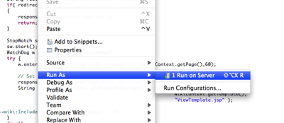
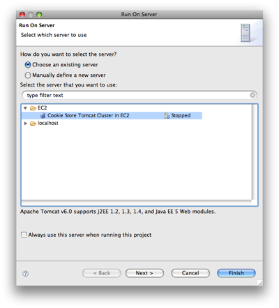

After you've created an EC2 Tomcat cluster, you'll want to get your Java web application running on it. The tools provided by the Web Tools Platform make this a snap.
Open any resource that you'd like to run on your EC2 Tomcat cluster (ex: a servlet or JSP file), right-click, and select Run on Server from the context menu.

Select the EC2 Tomcat cluster you want to publish to and finish the Run on Server wizard.

If this is the first time you're using your EC2 Tomcat cluster, you'll have to wait a few minutes while your EC2 instances are booted up and your applications are published. The first time you publish a web application to your EC2 Tomcat Cluster may take a few minutes, especially for large applications that include many jar libraries.
If your EC2 Tomcat cluster was already running, the AWS Toolkit for Eclipse only needs to publish any resources that you've changed since the last time it published, so it should be much faster.
Once the AWS Toolkit finishes publishing your projects your resource should open within a web browser in Eclipse.
If you just want to publish your application to your EC2 Tomcat cluster, but aren't interested in running any of the resources, you can also right-click your EC2 Tomcat cluster from the WTP servers view and select Publish from the context menu or Start if your EC2 Tomcat cluster isn't running yet.